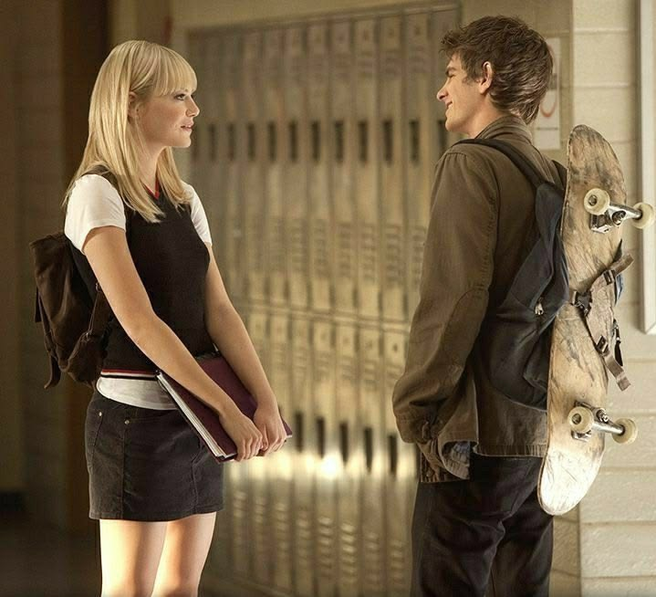
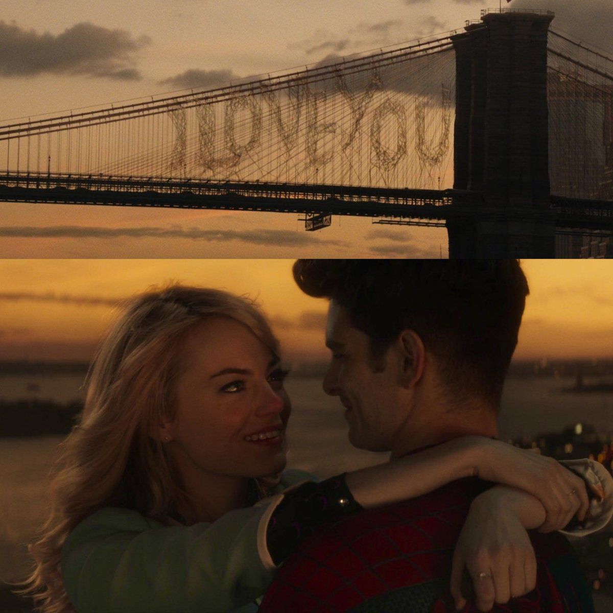

Para o meu amor, Dayanne ❤️
clique para começar
Eu te amo, dayanne guerhardt!
Feliz dia dos namorados,
Minha princesa.

Nunca nos vimos pessoalmente, muito menos cruzamos olhares, mas eu nunca precisei disso pra te amar de verdade. Assim como Peter amou a Gwen, eu teria uma foto sua no meu computador e esperaria o momento certo pra tentar te chamar pra sair. Eu não só te amo como Peter ama a Gwen, eu te amo do meu próprio jeito.
Não importa a distância que esteja nos separando, irei sempre te amar mesmo que tenha qualquer obstáculo ou dificuldade em minha frente, sempre irei superá-los como Peter fez pela Gwen. Nunca irei desviar desse caminho, porque afinal, você é minha direção!

Eu acho muito importante a icônica frase do Tio Ben: "Grandes poderes trazem grandes responsabilidades", mas ele esqueceu de mencionar que o amor também é como um grande superpoder, que traz responsabilidades e, principalmente, medo.
E isso não é nada ruim, porque é essa responsabilidade que me ajuda a ser uma pessoa melhor a cada dia. Te amar foi o maior presente que me foi dado e agradeço todos os dias. É verdade que sinto medo, mas o meu único medo é o de te perder, meu amor! Por isso, sempre vou me esforçar para ser alguém que você merece.
Enfim, quero te desejar feliz Dia dos Namorados, minha princesa!
Obrigado por ser sempre essa pessoa incrível — tenho muito orgulho de você. ❤️